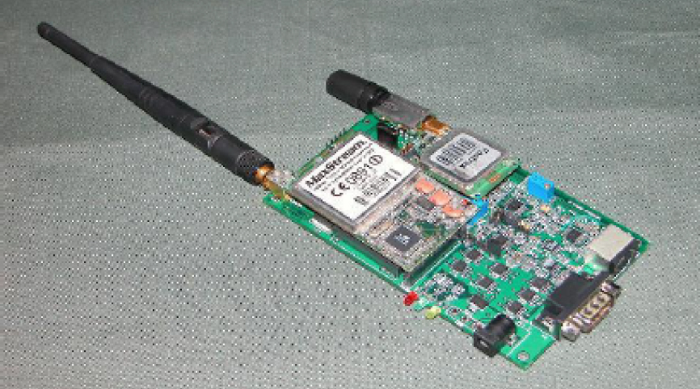
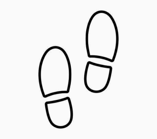

Aquatech - Water Purifying Device
A cost effective and maintenance free water disinfectant device, that removes pathogens and provides
chemical free water.
It aids in killing bacteria, destroying algae and eliminating chemical odor. It provides long
lasting
purification unaffected by pH, temperature and aeration of sunlight.
It is a safe, environment friendly device, ideal for use in scenarios where water is used by those
that
are allergic or sensitive to sanitization chemicals.
The device is apt for purification of water in community living, hospitals, leisure homes, hotels,
swimming pools, spas and jacuzzis.

Smart Physiological Monitoring System
Detects a range of vital health parameters with the help of wearable sensors integrated into a
single
unit. The data collected is then transmitted to a central monitoring system.
This solution is unique in its ability of precise monitoring and transmission of vital parameters
for
further predictive analysis and for prescriptive analysis by health care professionals
A continuous ambulatory monitoring device, it detects ECG, heart rate, blood pressure, SPO2 and GSR
records (physiological responses to real time events)

Step Monitoring - Smart Pedometer
A wearable device that monitors normal, aerobic steps and body movements
The data collected is used to compute and present an overall picture of the total steps, Kilo
calories
and distance covered per day by the user. The data monitored can then be communicated to health care
professionals for prescriptive analysis.A wearable device that monitors normal, aerobic steps and
body
movements
The data collected is used to compute and present an overall picture of the total steps, Kilo
calories
and distance covered per day by the user. The data monitored can then be communicated to health care
professionals for prescriptive analysis.